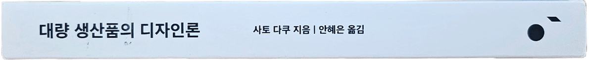
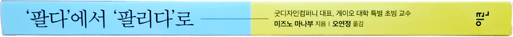

hello
Read

- Hello
- Hello
- Hello

- Hello
- Hello
AESOP 2ND EDITION
ISSUE NO.16
MAGAZINE B
2023년 7월 15일에 스터디 했음

HAY
ISSUE NO.72
MAGAZINE B
2023년 6월 24일에 스터디 했음
- Hay는 덴마크 명품 가구 브랜드의 결을 유지하면서도 합리적으로 고객에게 좋은 퀄리티의 가구를 전달하고자 하는 브랜드이다.
- 고가의 오래된 가구들보다 실용성이 높고 컬러감이 좋은 브랜드로 인식된다. 또한, Hay의 가구는 집 중심의 가구이지만 어디에 두어도 자연스럽게 스며드는 것이 장점이며, 컬러를 잘 활용하여 사용해서 튈 것처럼 보이지만 자연스럽게 공간과 어우러진다.
- 혼자 튀지 않고 겸손함을 유지하는 danish 디자인이란? 남들과 다르지 않다는 겸손함과 개성과 현실의 밸런스
- 스톡홀름의 헤이 하우스는 스탭과 손님이 구분없이 어우러져 자신의 집처럼 구경하고 경험한다. 또, 아무리 작은 물건을 사도 Hay만의 에코백에 담아서 진심을 전달하는데 이는 행복한 시간을 보내고 갔으면 하는 마음에 전달하는 Hay 브랜드만의 사소하지만 따듯한 서비스를 보여준다.
- 제조 공정을 한 곳에서 몰아서 하지 않고, 신뢰하는 공장에서 따로따로 제작을 거치고 한 곳에 모아 조립하는 것이 특징이다.
- 세계의 여러 브랜드 및 디자이너들과 콜라보레이션을 진행하며, 이는 전세계의 사람들에게 좋은 퀄리티의 가구를 전달하기 위해 브랜드 확장 계획을 가지고 있음을 보여준다.
-
- Traditional 미드센트리 모던디자인의 전통성을 지키는 브랜드, 하지만 과거에만 머무르는 것이 아니라 과거를 존중하되 현재의 것을 받아들여 미래를 이야기하는 브랜드이다.
- Accesible 품질 좋은 디자인 제품에 대한 진입 장벽을 낮췄다.
- Practical 언제나 유용한 가구를 만드는 것이 추구하는 방향이다.
- Versatile 생활에 필요한 가구를 모두 만들기 때문에, 실내 가구뿐만 아니라 옥외용 가구도 제작한다.
- Flexible 크기와 형태가 다른 모듈을 만들어 결합, 분리할 수 있는 소파, 마그스 소파를 제작한다.
Brand Values
-
- FUN & Functionality
- Classic & Modern
- Clean & Colorful
Brand Identity 반대되는 단어들이 적절히 붙어서 조화가 이루어진다.
-
왜 덴마크는 가구디자인으로 유명할까?
덴마크는 겨울밤의 시간이 매우 길기 때문에 집에 머무는 시간이 길어졌고, 그로 인해 집에 있는 물건인 가구들에 대한 관심과 가정의 화목을 추구하게 되었다고 한다. 그래서 이런 이유로 가구디자인이 중요해지고 덴마크 사람들이 가구에 대한 지식이 높아진 것이며, 덴마크의 광활한 자연의 재료와 색감에 영감받아 가구산업이 발전하게 되었다고 한다.


MOSCOT
ISSUE NO.64
MAGAZINE B
2023년 6월 11일에 스터디 했음
- MOSCOT을 대표하는 키워드 : 타임리스 / 빈티지 / 클래식 = classiconic 클래시코닉
- 약간의 고지식함, 하지만 고지식함이 클래식을 유지하고 고객 입장에서 계속 생각하기 때문에 클래식하면서도 매번 트랜드를 놓치지 않는 브랜드로 유지되는 느낌이다. 이 부분에서 MOSCOT만의 고지식함과 위트의 공존을 확인할 수 있었다.
- 브랜드의 유산과 역사를 매우 소중하게 여긴다. 수십년 전 무화과 상자를 개조해 만든 안경 보관함을 계속해서 사용하고 있고 의자, 장비, 서랍 등이 가구도 매장에 보존한다. 보존의 가치를 아는 브랜드라는 이미지를 주며 신뢰감을 준다.
- 안경 틀 양옆에 붙여진 다이아몬드 문양이 모스콧의 상징이라고 할 수 있다.
- 겉으로 보기에는 멋지게 차려 입은 뉴요커 느낌이 강하게 들지만, 자신들의 고객한테는 한없이 퍼주고 돌봐주는 느낌이다. (예를 들어, 틀이 망가지면 바로 제작해 보내주는 서비스가 있다고 한다.)
- 브랜드의 철학을 유지하기 위해 콜라보레이션을 하더라도 모스콧 틀에 많은 변화가 있진 않음
- Moscot Head : 빈티지 신문지를 찢어 마네킹 헤드에 붙인다, 새로운 브랜드 메세지를 전달하는 계몽가역할도 하였음, 계속해서 제작하고 있기 때문에 일년에 약 천 개의 헤드가 나온다.
- "우리는 패션브랜드가 아니라 아이웨어 브랜드이기 때문에 자신들의 독특함을 안경에 드러내지 않으려고 한다." - by Moscot
- 컨셉에 먹히는 브랜드가 많았는데, 모스콧은 브랜드 컨셉 가치를 명확하게 잘 지켜나가고 있는 것 같다.